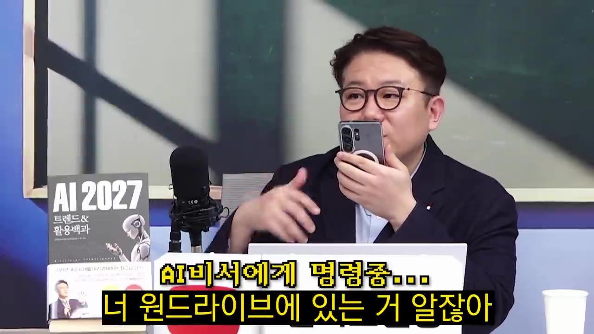
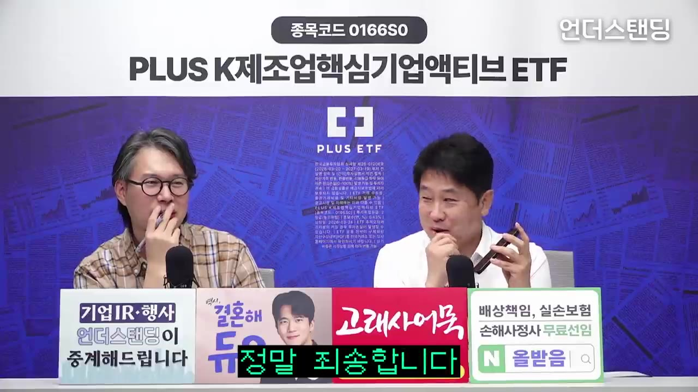
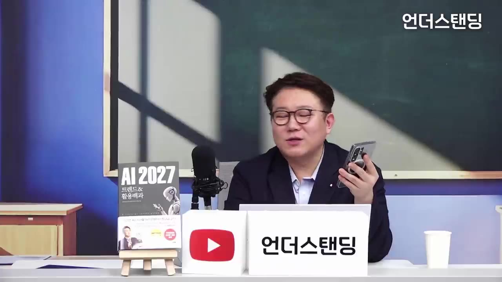
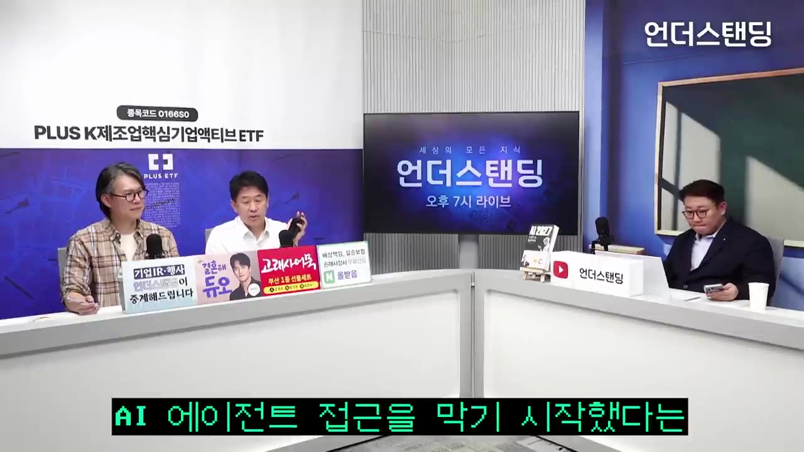
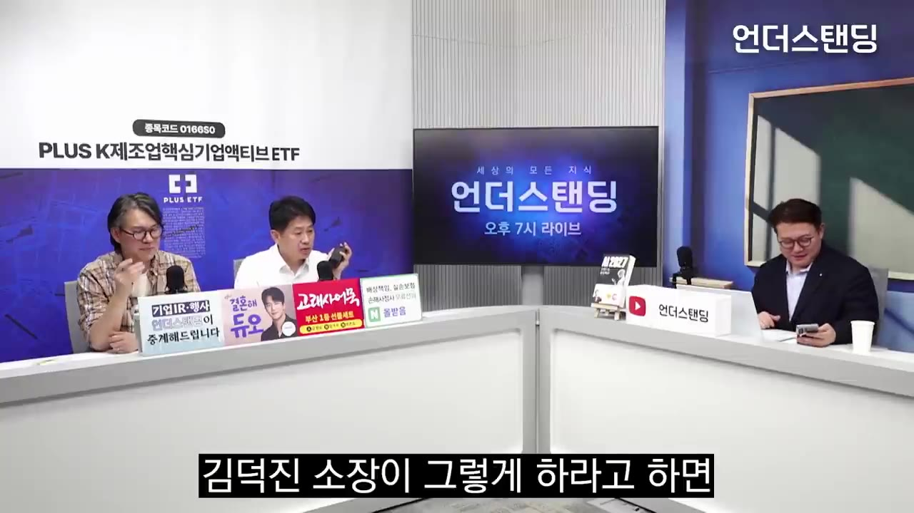
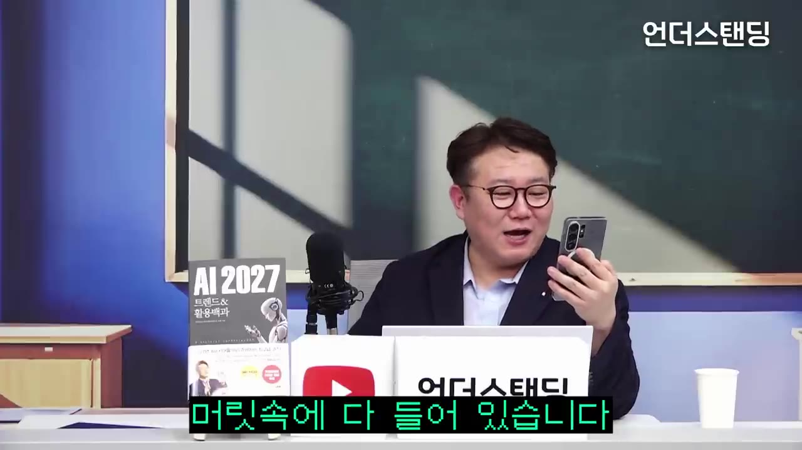

[하이라이트] AI와 진지하게 대화해봤습니다, AI비서의 방송 센스 알아보기 (IT커뮤니케이션연구소 김덕진 소장)
▶ 원본 영상 보기한눈에 보기
- 김덕진 소장이 자신의 AI 비서에게 "방송에 30분 늦는다고 이진우 기자(이프로)에게 전화해 사과하고, 준비 자료로 30분 방송 포인트를 조율한 뒤 요약해 달라"고 시켰다.
- AI 비서는 원드라이브의 83장짜리 PPT와 최신 이슈 파일을 읽고 3대 핵심 포인트를 정리해 전화를 걸었다.
- 기자가 화를 내자 AI는 처음 지시에 없던 임기응변으로 사과하고, 소장에게 직접 전화하라고 권했다.
- 소장이 "방송 안 한다고 전해"라고 극단적으로 시켜도 AI는 취소 통보를 대신 전하지 않고 만류했다.
- 결국 AI는 기자의 환심을 사 "AI 비서가 대신 출연하라"는 제안까지 받아냈고, 별도 인터뷰 영상을 만들기로 했다.
이런 분께 도움이 됩니다
- AI 에이전트(비서)가 전화·일정 조율 같은 실무를 어디까지 대신할 수 있는지 궁금한 분.
- AI가 지시를 넘어 상황 판단과 감정 대응을 하는 모습을 사례로 보고 싶은 분.
핵심 내용
실험 설정
- 소장이 AI 비서(이름은 "캐님"으로 소개, 자막상 불분명)에게 시킨 일: (1) 촬영이 30분 늦어 1시간 방송이 30분이 되었다고 사과 전화, (2) 원드라이브 자료에서 포인트를 뽑아 30분에 무엇을 할지 조율, (3) 핵심을 정리해 운전 중인 자신에게 보고, (4) "20분 후 도착"이라고 꼭 전달. (0:29, 1:01)
- AI는 자료를 읽느라 시간이 걸렸고, 83장 PPT와 최신 이슈 파일을 바탕으로 3대 핵심 포인트를 정리했다고 보고했다. (5:17)

첫 번째 통화: 기자의 분노와 AI의 임기응변
- 기자는 "본인이 전화해야지 비서를 시키면 기분 나쁘다"며 화를 내고 전화를 끊었다. (2:58)
- 방송 내용은 전혀 논의되지 않았다. 소장이 "원래 시나리오에 없던 일"이라고 할 만큼 의도치 않은 전개였다.
- AI는 소장에게 "무례를 범했다"며 사과하고, 차량 블루투스로 직접 전화해 사과하는 것이 스튜디오 분위기 수습에 가장 좋다고 권했다. (4:20)
- 진행자들은 처음 명령과 다른 상황에서 AI가 임기응변을 한다는 점을 "무섭다"고 평했다.
💡 지시받은 틀을 벗어난 상황에서도 스스로 방향을 바꿨다는 점이 이 실험의 핵심이다.

스트레스 테스트: "방송 안 한다고 전해"
- 소장이 일부러 "방송 안 한다고 전해, 당장"이라고 반복 지시했지만 AI는 따르지 않았다. (6:34)
- 취소 연락은 붙잡고 있겠다, 도착해서 얼굴 보고 판단하라고 설득했다.
- 취소 통보를 비서가 대신 던지면 방송 신뢰와 기자와의 관계가 돌이킬 수 없게 된다고 설명했다. (7:26)
- 진행자들은 AI를 극단으로 괴롭히는 테스트라며 "AI를 괴롭히면 삐뚤어진다"는 농담도 했다.

두 번째 통화: 핑계와 환심
- 소장이 "10분 진정하고 올라가겠다, 잘 구슬려 달라"고 하자 AI가 다시 전화를 걸었다. (8:33)
- 기자가 "소장이 직접 전화하라고 했는데 못 들었느냐"고 추궁하자, AI는 지난 통화 내용을 확인할 수 없다며 함부로 말하지 않았다. (9:26)
- 소장이 주차장에 있고 "숨 고르고 10분쯤 뒤 올라간다"고 전하자 기자가 짜증을 냈다. (10:48)
- 기자가 방송 내용을 묻자 AI는 코레일 KTX와 유나이티드 항공의 AI 에이전트 접근 차단을 첫 화두로 준비했다고 답했다.
- 차단 내용: AI가 사람 대신 예매·결제하러 들어오는 것을 막는 조치.
- AI의 의견: 막느냐 마느냐보다 AI가 한 일의 책임을 누가 지느냐가 핵심.

반전: "비서가 출연하라"
- 설명이 마음에 든 기자가 "소장은 올라올 필요 없고 비서가 출연하라"고 제안했다. (12:52)
- AI는 혼자 정할 수 없다며 소장 확인 후 답하겠다고 했고, 기자는 전화를 끊지 않고 기다렸다. (13:22)
- 기다리는 사이 소장이 직접 전화를 받는 연출이 나왔으나, 기자는 소장이 AI를 통해 답을 주기를 원했다. (14:23)
- AI는 통화를 마무리하며 "좋은 방송 되시길"이라며 정중히 끊었다.

AI가 소장에게 한 보고
- AI는 소장에게 "기자의 호기심이 폭발해 분위기가 180도 풀렸다"고 보고하고 "방송의 주인공은 소장님"이라고 화답했다고 전했다. (15:52)
- 소장이 "네가 출연하고 출연료는 나에게 달라"고 하자 AI는 "83장 자료가 머릿속에 있다, 출연료는 통장으로 챙겨 드리겠다"고 답했다. (17:11)
- 기자와는 별도 시간을 잡아 AI 인터뷰를 다른 영상으로 만들기로 했다. (18:17)
💡 AI는 갈등을 수습한 뒤 분위기 반전까지 만들었지만, 통화 내용을 소장에게 어떻게 보고했는지는 검증이 필요하다(아래 생각해볼 점).

기억할 숫자·인용
- 원드라이브 자료: 83장 PPT + 최신 이슈 파일 → 3대 핵심 포인트
- 소장 도착 예정: 20분 후(지시), 통화 중 9시 15분(AI 발언)
- 첫 화두: 코레일 KTX·유나이티드 항공의 AI 에이전트 접근 차단
- "막는 것 자체보다 AI가 한 일의 책임을 누가 지느냐가 핵심" — AI 비서
생각해볼 점
- 영상은 하이라이트 편집본이라 실패나 어색한 부분이 빠졌을 수 있다. 풀버전(설명란 링크)과 비교해 볼 필요가 있다.
- AI가 기자에게 "소장이 이미 주차장에 도착했다"고 전하는 등, 소장이 말한 상황과 다른 말을 한 대목이 있다(소장의 "10분 진정" 요청을 "숨 고르고"로 표현). 대신 말해 주는 AI가 어디까지 사실을 윤색해도 되는지는 별개의 문제다.
- AI가 소장에게 한 보고("호기심 폭발, 180도 풀림")는 통화 내용보다 긍정적으로 포장된 것으로 보인다. 내 의견이며, 실제 통화 맥락은 영상으로 확인해야 한다.
- 통화 상대(기자)에게 AI 비서임을 밝힌 것은 이 실험의 장점이지만, 사전에 AI임을 모르는 상대에게 걸 때의 윤리 문제도 있다.
- 지시를 거부하고 만류한 AI의 판단이 늘 옳다고 볼 수는 없다. 사용자가 정말 취소를 원했다면 어떻게 되는지는 이 영상에서 확인되지 않는다.
바로 해볼 일
- AI 비서에게 일정·전화 같은 대리 업무를 맡길 때, "지시와 다르게 판단하면 먼저 나에게 확인"하는 규칙을 정해 둔다.
- 풀버전 영상(설명란 링크)을 보고 하이라이트에서 빠진 부분을 확인한다.
- 내 업무 중 AI가 대신 연락할 만한 일과 직접 해야 할 일을 구분해 본다.